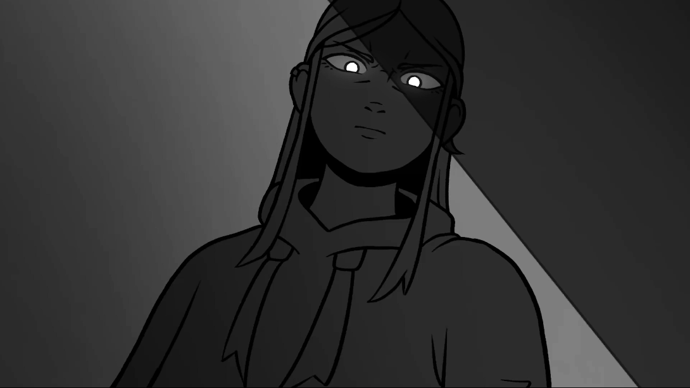

Hi, I'm DouweHoi, ik ben Douwe
Welcome to my portfolio. I'm a multimedia designer and digital artist currently based in Maastricht. I specialise in graphic design, storytelling, UX design, illustration, animation and motion design. I've worked on many projects requiring a blend of skills. Below are some of my highlights. Welkom op mijn portfolio. Ik ben een multimedia designer en digitaal kunstenaar momenteel gevestigd in Maastricht. Ik ben gespecialiseerd in grafisch ontwerp, storytelling, UX design, illustratie, animatie en motion design. Ik heb aan veel projecten gewerkt die een mix van vaardigheden vereisen. Hieronder vind je enkele hoogtepunten.
Royal is er voor jou
Seeking to connect with a younger target audience, I developed a campaign for Royal, an arthouse cinema in Heerlen (for my earlier work for Royal, see Royal in Motion). The campaign focused on the diversity of the cinema's future offerings ands included a visual identity, a series of posters, and an interactive installation. Om een jongere doelgroep aan te spreken ontwikkelde ik een campagne voor Royal, een artistiek filmhuis in Heerlen (voor mijn eerdere werk voor Royal, zie Royal in Motion). De campagne legde de focus op de diversiteit van het toekomstige aanbod van het filmhuis en omvatte een visuele identiteit, een reeks posters en een interactieve installatie.
Royal in Motion
In my fourth year of Communication and Multimedia Design (CMD), I underwent a project for Royal, an arthouse cinema in Heerlen (for my later work for Royal, see Royal is er voor jou). I created a rebranding for the cinema, including a new logo, visual identity, and marketing materials. In mijn vierde jaar van Communication and Multimedia Design (CMD), voerde ik een project uit voor Royal, een artistiek filmhuis in Heerlen (voor mijn latere werk voor Royal, zie Royal is er voor jou). Ik maakte een rebrand voor het filmhuis, inclusief een nieuw logo, visuele identiteit en marketingmaterialen.
Digital artDigitale kunst
I primarily create digital art for personal projects, focusing on illustrations, concept art, and character design. You can view some of my work on this page. Ik maak vooral digitale kunst voor persoonlijke projecten, met focus op illustraties, concept-art en character design. Je kan hier enkele van mijn werken bekijken.

Had Je Maar
In my third year of CMD, I followed an external elective of Visual Communication called 'Storytelling Fiction', where I spent half a year making the animated short film 'Had Je Maar'. In mijn derde jaar van CMD volgde ik een externe minor van Visuele Communicatie genaamd 'Storytelling Fiction', waar ik een half jaar aan de geanimeerde korte film 'Had Je Maar' heb gewerkt.
Knip Musical
The high school I attended has its own musical group. Since 2022, I've been designing the posters and other marketing materials for their annual performances. Mijn middelbare school heeft zijn eigen musicalgroep. Sinds 2022 ontwerp ik de posters en ander uitingen voor hun jaarlijkse voorstellingen.
Echoes in the Sand
In my fourth year of CMD, I followed a minor called 'The Narrative', which revolved around storytelling. I wrote the short story 'Echoes in the Sand', which I adapted into an illustrated book. In mijn vierde jaar van CMD volgde ik een minor genaamd 'The Narrative', die draaide om storytelling. Ik schreef het korte verhaal 'Echoes in the Sand', dat ik heb gerealiseerd tot een geïllustreerd boek.
CBS InternshipCBS Stage
During my internship at Statistics Netherlands (CBS), I worked on a multimedia story about the European Green Deal and created informative posters for a presentation at Foreign Affairs. Tijdens mijn stage bij het Centraal Bureau voor de Statistiek (CBS) werkte ik aan een multimediaverhaal over de European Green Deal en maakte ik informatieve posters voor een presentatie bij het Ministerie van Buitenlandse Zaken.